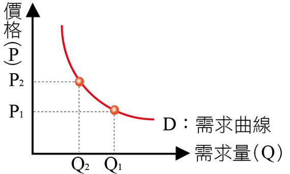
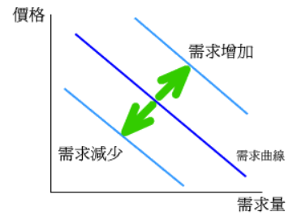
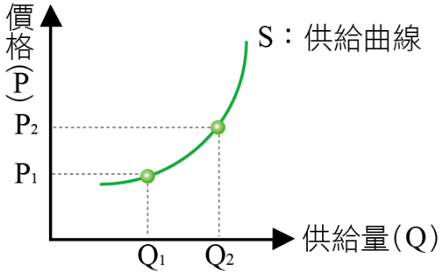
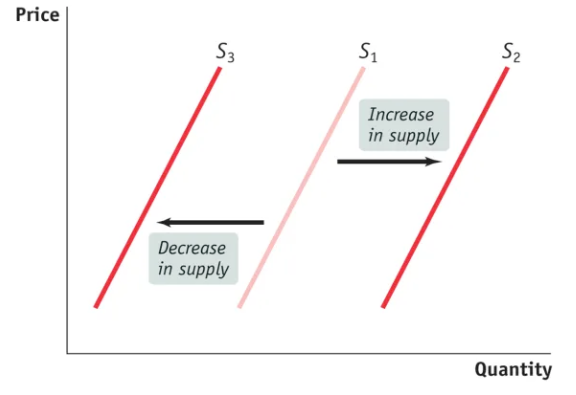
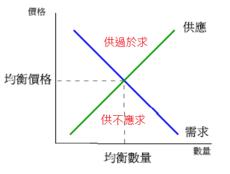

陳杰龍的筆記網站
陳杰龍的筆記網站 主頁
主頁 歸檔
歸檔 分類
分類 其他
其他 關於我
關於我 3.需求與供給
3.需求與供給
筆記說明
此筆記用途在於國立屏東大學資訊管理系大三上經濟學重點整理
並非所有人都適用
如果有侵犯到版權的問題在聯繫我，再聯絡我，我在移除
並非所有人都適用
如果有侵犯到版權的問題在聯繫我，再聯絡我，我在移除
市場與價格
- 市場有買賣雙方且有各式各樣的型態
- 不同的市場其買者與賣者面對不同的競爭強度
- 貨幣價格：一項產品的價格是買者為了得到它所必須放棄的金額
- 相對價格：一個價格之於另一個價格的比率，對買者而言相對價格就是機會成本
- 產品的價格是相對價格
需求
- 需求法則：價格↑，需求↓；價格↓，需求↑
- 為何價格↑，需求↓?
- 替代效果
- 所得效果
- 為何價格↑，需求↓?
- 需求曲線
 - 需求變動
- 相關商品價格
- 所得
- 人口
- 預期的未來價格
- 預期的未來所得
- 偏好
- 需求的增加減少

供給
- 供給法則：價格↑，供給↑；價格↓，供給↓
- 為何價格↑，供給↑?
- 價格上漲，有利可圖
- 供給量增加，廠商要求更高價格(供給↑，邊際成本(MC)↑)
- 為何價格↑，供給↑?
- 供給曲線
 - 供給變動
- 生產要素價格
- 相關商品的價格
- 預期的未來價格
- 供給者人數
- 技術
- 自然狀態
- 供給的增加減少

市場均衡
- 均衡價格：需求量=供給量的價格
- 均衡數量：均衡價格下的購買量與銷售量
- 市場會趨向均衡
- 價格會調節購買計畫與銷售計畫
- 當兩邊計畫不一致時，價格會調整，直到市場達成均衡為止
- 價格做為調節器

預測價格與數量的變動
- 需求↑，均衡價格↑，均衡數量↑
- 需求↓，均衡價格↓，均衡數量↓